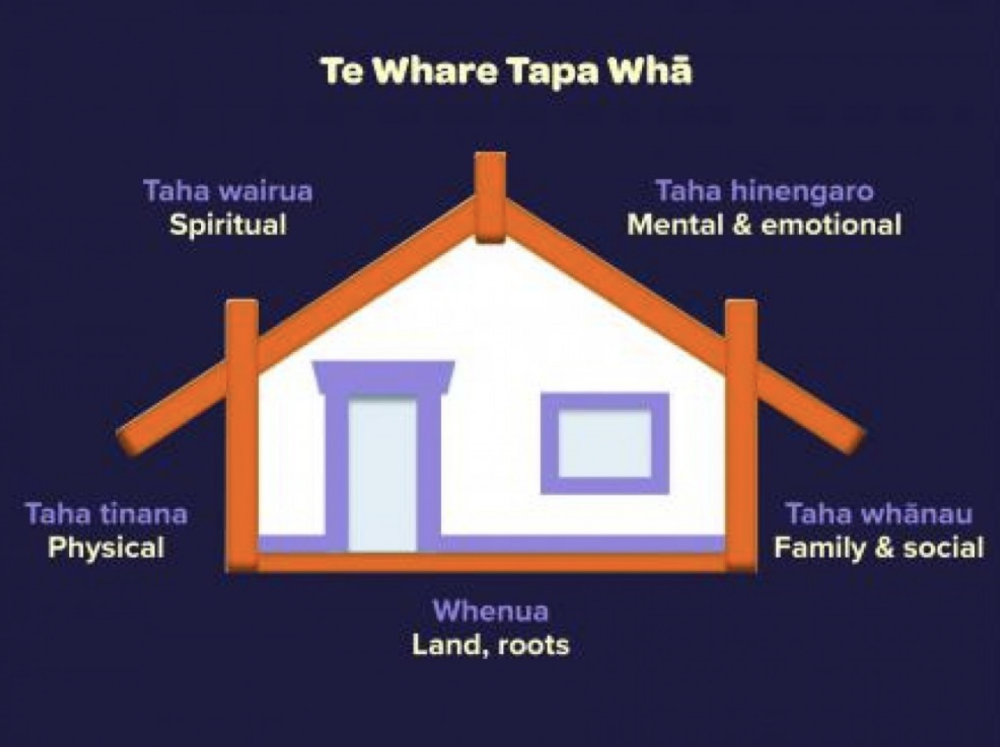

Sprint 4 Human Skills - Te Whare Tapa Whā Wellbeing Plan
14 April, 2025
I'm going to create a wellbeing plan using Tā Mason Durie’s Te Whare Tapa Whā model. This is a hollistic wellbeing model that focuses on for main aspects of wellbeing, represented as walls of a wharenui. All the walls work together to hold the structure together. If one wall falls, so do the rest. All four walls are build on a strong foundation that connects it to the land.
Some activities support and strengthen more than one of the walls, they'll be included them in more than one place.
This new wellbeing plan goes in conjunction with my learning plan from Sprint 2, and my mindfulness plan from sprint 3. By committing to all of these, I'll have the best possible learning experience. I'll continue focusing on my wellbeing after the end of my study at DevAcademy.
My Wellbeing Plan
Taha Tinana (Physical Wellbeing)
- Prioritising a full eight hours of sleep a day, Ideally going to bed much earlier than I am used to, around 10:00PM
- Going on walks first thing in the morning, to get out of the house.
- Staying physically active, going to the gym at least twice a week (and if I don't have time, exercising at home.)
- Eating healthy - Recently I've been eating a lot more wholefoods and I'm feeling much better physically so I plan to continue this.
Taha Whānau (Family Wellbeing)
- Make sure to spend time with friends at least once a week (ideally after completing the majority of the week's study, so I'll have to prioritise well and focus for the beginning of the week.)
- While at home with family, spend at least one hour a day being fully present with people instead of studying on my computer.
Taha Hinengaro (Emotional and Mental Wellbeing)
- Prioritising a full eight hours of sleep a day, Ideally going to bed much earlier than I am used to, around 10:00PM. Also making sure that the eight hours of sleep takes place during reasonable hours, getting up by 8:00AM at the absolute latest.
- Taking regular breaks when studying, and not mentally stimulating ones (e.g. take a walk or stare at a wall, rather than scrolling social media.)
- Continue to practice mindfulness.
- Mentally declutter by journalling and "brain-dumping", usually nightly for a short time.
Taha Wairua (Spiritual Wellbeing)
- Continue to practice mindfulness.
- Spend time in nature with walks each morning, and at least once a week go on a longer walk for a few hours.
Whenua (Interconnections to the land and environment)
- Spend time in nature with walks each morning, and at least once a week go on a longer walk for a few hours.
- Just sit under a tree for a while (I know it's simple but it really works for me.)